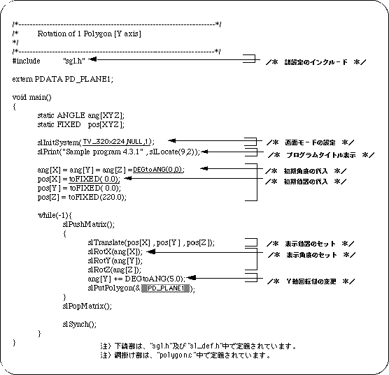
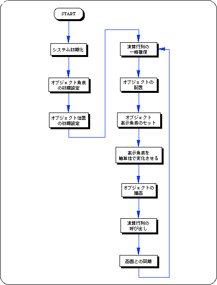
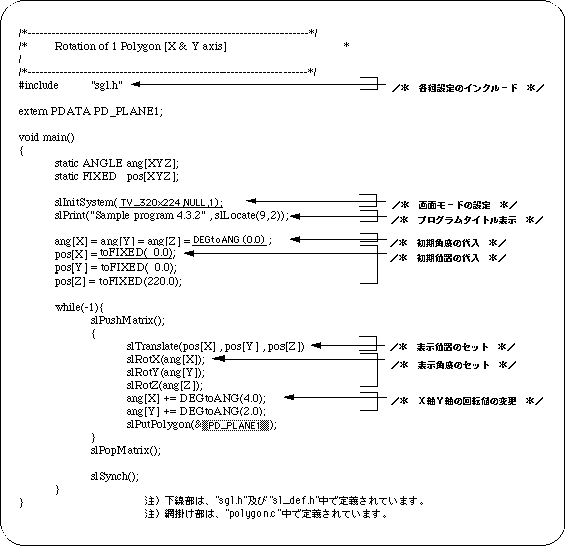

Return to previous page | Return to menu | Go to next page
To rotate an object in space, use the library function “slRotX, slRotY, slRotZ”. Each controls the rotation corresponding to the coordinate axis at the end of the function name.
Object rotation is achieved by multiplying each vertex coordinate of the object by a transformation matrix called a rotation matrix.
The following list 4-2 is a program (single-axis rotation) that rotates the square polygon drawn in list 2-1 in Chapter 2 on the Y axis using the library function “slRotY”. The rotation matrix is expressed by the following equation.


List 4-3 below is a program for realizing 2-axis rotation. Rotate the square polygon around the X and Y axes.
The actual operation is the same for single-axis rotation, 2-axis rotation, or 3-axis rotation. By manipulating the angle value of the rotation operation function corresponding to each axis, the object is drawn in a rotated state.
